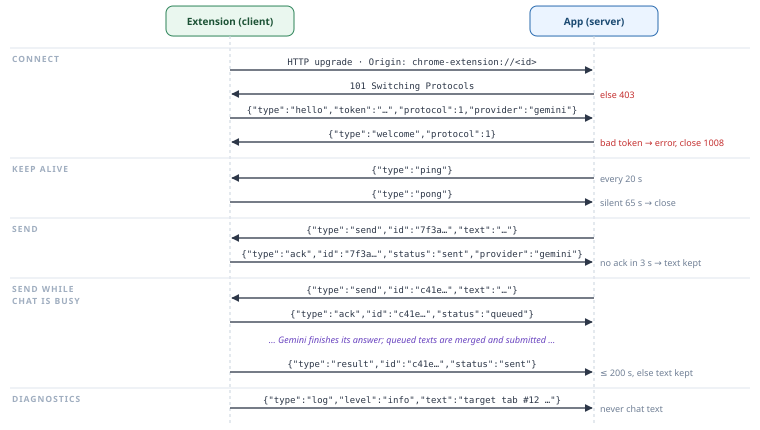

پروتکل عمداً کوچک است: پیامهای JSON متنی، هر کدام با یک فیلد type. هفت نوع پیام کل کار را انجام میدهند.
مهمتر از خود پیامها، قانونهای تکامل پروتکل است، چون از اول قرار بود providerهای دیگر بعداً اضافه شوند
بدون اینکه اپ یا افزونهی قدیمی بشکند.

| پیام | جهت | معنی |
|---|---|---|
hello | افزونه به اپ | اولین پیام: توکن، نسخهی پروتکل، و نام provider (برچسب نشانگر) |
welcome | اپ به افزونه | دستدادن پذیرفته شد |
ping / pong | هر دو طرف | هر ۲۰ ثانیه؛ service worker را بیدار نگه میدارد و اتصال مرده را پیدا میکند |
send | اپ به افزونه | متن برای تحویل، با شناسهی GUID (پیشوند قبلاً اعمال شده) |
ack | افزونه به اپ | وضعیت فوری: sent، queued یا error با detail، و نام provider |
result | افزونه به اپ | نتیجهی نهایی ارسالی که queued شده بود |
log | افزونه به اپ | تشخیص برای لاگ اپ (ساختار صفحه، زمانها)؛ هرگز متن چت |
hello شمارهی پروتکل را دارد تا اگر روزی تغییر ناسازگار لازم شد، دو طرف بتوانند آن را تشخیص دهند.log در فاز ۸ و result در فاز ۹ اضافه شدند، بدون تغییر هیچ پیام قبلی.
وضعیتها کلمههایی مثل sent و queued هستند، نه چیزی مثل Gemini-submitted. اپ فقط میداند متن
تحویل شد، در صف است، یا شکست خورد؛ اینکه چه کسی تحویل داد فقط یک برچسب (provider) برای نمایش و لاگ است.
همین باعث میشود اضافه کردن ChatGPT یا یک API به تغییر در اپ نیاز نداشته باشد.
| قاعده | دلیل |
|---|---|
| پیام hello در کمتر از ۵ ثانیه | اتصالی که خودش را معرفی نمیکند، منبع نگه ندارد |
| پیام ping هر ۲۰ ثانیه | مرورگر Chrome یک service worker بیکار را بعد از حدود ۳۰ ثانیه متوقف میکند؛ فعالیت روی WebSocket آن را زنده نگه میدارد |
| بستن بعد از ۶۵ ثانیه سکوت | بیش از سه ping از دست رفته یعنی طرف مقابل واقعاً رفته |
| مهلت ack سه ثانیه | جواب عادی زیر ۱۲۰ میلیثانیه است؛ کار طولانیتر باید queued بگوید |
| انتظار برای result تا ۲۰۰ ثانیه | افزونه بعد از ۳ دقیقه منتظر ماندن برای Gemini، خودش خطا گزارش میکند؛ اپ کمی بیشتر صبر میکند |
۲۶ تست یکپارچه با سوکت واقعی برای سرور، و ابزار tools/RelayTestClient که نقش افزونه را بازی میکند و میتواند
عمداً sent، queued، error یا هیچ جوابی برگرداند. در Chrome واقعی، بعد از راهاندازی دوبارهی اپ، افزونه ۰٫۹ ثانیه بعد از
بالا آمدن سرور دوباره وصل شد.
The protocol is seven JSON message types over one WebSocket. The extension says hello with a token and a protocol version, the app pings every 20 seconds, and each send carries a GUID that the ack echoes with a generic status — sent, queued or error. Slow deliveries answer "queued" immediately and send a result later. The evolution rules matter most: unknown types and fields are ignored and features are only added as new optional messages; result and log were added that way without breaking anything.